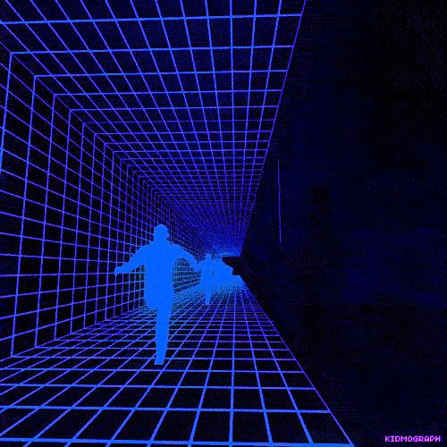
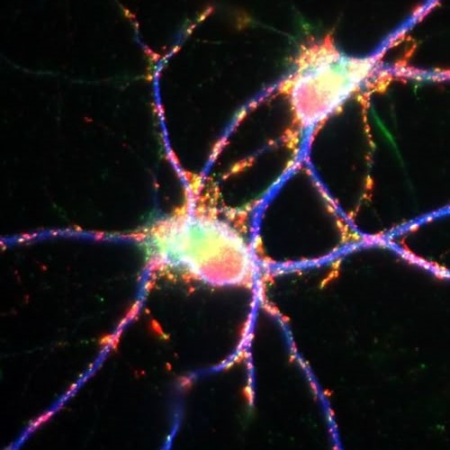
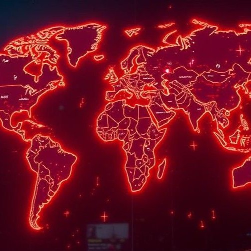
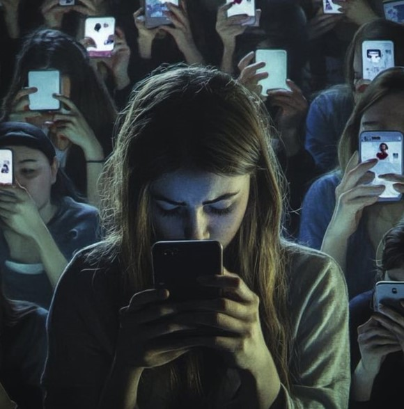

Anatomía del Scroll Infinito






LA COLONIZACIÓN DEL COMPORTAMIENTO:CASOS DE MANIPULACIÓN DIGITAL EN LA SOCIEDAD
El diseño web hegemónico no es neutral: es una infraestructura de control que moldea nuestra conducta cotidiana. A través de la supresión de la fricción y el uso de patrones engañosos, las plataformas capturan nuestra atención y explotan nuestros reflejos biológicos, transformando al ciudadano crítico en un consumidor pasivo. A continuación, se analizan cuatro escenarios reales donde las interfaces digitales quiebran la autonomía de las personas y colonizan su tiempo de vida.
El Secuestro del Sueño (La luz azul artificial)

Una persona entra a una red social o sitio de noticias en la cama, a las 11 de la noche, con la intención de mirar "solo cinco minutos" antes de dormir. Termina apagando el celular a las 3 de la mañana con los ojos cansados y dolor de cabeza.
El sitio web utiliza un espectro cromático de azul de alta intensidad. Esta decisión estética emula la luz del día a nivel biológico, inhibiendo la hormona del sueño (melatonina) de forma forzada para mantener el sistema nervioso en alerta artificial y prolongar las horas de consumo nocturno.
El Bucle de la Notificación (El pánico a microescala)

Un estudiante intenta concentrarse en sus apuntes, pero cada pocos minutos su pantalla destella con un globo o círculo de color rojo brillante. Siente una incomodidad intolerable y una urgencia incontrolable de tocar la pantalla para hacer desaparecer ese punto rojo, perdiendo horas de estudio.
El rojo saturado en las interfaces opera como un disparador de pánico biológico. El diseño corporativo simula una herida orgánica para generar una molestia perceptual que obliga al usuario a interactuar de manera compulsiva para "limpiar" la pantalla y recuperar la paz visual.
El Desgaste por Privacidad (El camuflaje visual)
.jpeg)
Una persona quiere entrar a leer una nota y el sitio le pide aceptar las cookies. El botón para aceptar el rastreo es gigante, brillante y se encuentra al instante. Para rechazarlo, la persona tiene que entrar a tres menús ocultos y leer textos grises minúsculos que dicen "No, prefiero navegar inseguro". Termina aceptando por puro cansancio.
Es el patrón oscuro de Confirmshaming combinado con asimetría visual. El diseño hipertrofia y embellece la opción que beneficia a la empresa (robar datos) y degrada o camufla la opción de privacidad para desgastar la autonomía del usuario por puro agotamiento cognitivo.